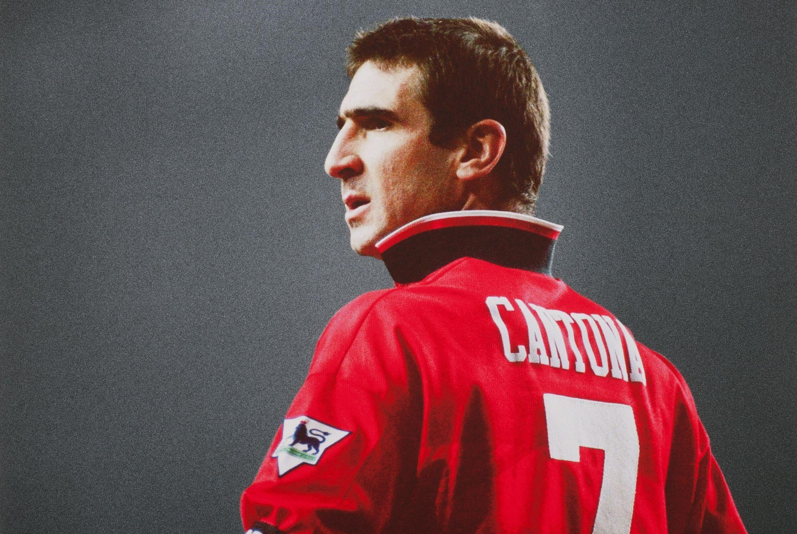
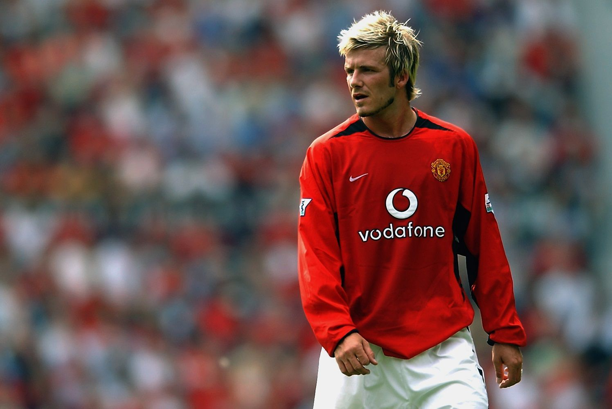

Sejarah Manchester United

Manchester United Football Club adalah sebuah klub sepak bola profesional yang berbasis di Old Trafford, Manchester Raya, Inggris, dan merupakan di Liga Utama Inggris. Klub ini pertama kali dibentuk dengan nama Newton Heath LYR Football Club pada tahun 1878, sebelum berganti nama menjadi Manchester United pada tahun 1902 dan pindah ke Old Trafford pada tahun 1910.
Manchester United telah memenangkan banyak trofi di bola Inggris, termasuk 20 gelar Liga—terbanyak di Inggris—13 gelar FA, 6 gelar Liga Piala, 20 gelar Community Shield, 1 gelar Liga Champions UEFA, 1 gelar Europa League, 1 gelar Piala Super UEFA, serta Piala Intercontinental dan Piala Dunia Antarklub FIFA. Pada musim 1998–1999, klub ini meraih treble (triple) dari Liga Utama, Piala FA, dan Liga Champions UEFA, menjadikannya salah satu klub tersukses sepanjang masa di Inggris.
Bencana Udara München 1958 merenggut nyawa beberapa pemain. Pada tahun 1986, di bawah manajemen Matt Busby, Manchester United mulai kembali ke jalur juara Inggris setelah pernah memenangkan Piala Eropa. Sir Alex Ferguson diangkat sebagai pelatih pada 26 November 1986, dan selama masa jabatannya, ia membawa klub meraih berbagai gelar, termasuk 13 gelar Liga Premier dan 2 gelar Liga Champions UEFA.
Manchester United adalah klub sepak bola terkaya ketiga di dunia untuk 2011–12 dalam hal pendapatan, dengan pendapatan tahunan sebesar €395.9 juta, dan kedua klub paling berharga tahun 2013, senilai $3.165 miliar. Pada bulan Januari 2015, Manchester United dinobatkan sebagai klub terkaya kedua di dunia. Ini adalah salah satu tim sepak bola yang paling banyak didukung di dunia. Setelah sahamnya tercatat di London Stock Exchange pada tahun 1991, klub itu dibeli oleh Malcolm Glazer pada Mei 2005 dengan nilai hampir £800 juta. Pada bulan Agustus 2012, Manchester United melakukan penawaran umum perdana di Bursa Efek New York.
Setelah era Sir Alex Ferguson, David Moyes ditunjuk sebagai pelatih pada 9 Mei 2013, tetapi masa jabatannya berakhir dengan hasil yang mengecewakan. Ia digantikan oleh Louis van Gaal pada 2014, yang berhasil meraih Piala FA pada 2016. Jose Mourinho kemudian menjadi pelatih dan membawa klub meraih Piala EFL dan Piala FA, namun masa jabatannya juga diakhiri pada 2018. Setelah Mourinho, Ole Gunnar Solskjær diangkat sebagai pelatih sementara, sebelum secara resmi menjadi pelatih tetap pada 2019. Di bawah kepemimpinannya, ia berhasil membawa klub meraih Piala FA dan memperbaiki performa tim, tetapi terpaksa dipecat pada 2021 setelah hasil buruk. Selanjutnya, Ralf Rangnick menjabat sebagai pelatih sementara hingga akhir musim 2021–2022, dan pada musim 2022–2023, Erik ten Hag diharapkan dapat mengembalikan kejayaan klub dengan pendekatan dan filosofi permainan yang baru. Saat ini, klub sedang mempertimbangkan Ruben Amorim, pelatih muda yang sukses di Sporting CP, untuk memimpin tim menuju masa depan yang lebih baik.
Stadion Old Trafford

Old Trafford (/ˈtræfərd/) adalah sebuah stadion sepak bola di Old Trafford, Greater Manchester, Inggris, dan merupakan kandang dari Manchester United. Dengan kapasitas 74.310, stadion ini adalah stadion sepak bola klub terbesar (dan stadion sepak bola terbesar kedua secara keseluruhan setelah Stadion Wembley) di Britania Raya, dan terbesar kedua belas di Eropa. Stadion ini berjarak sekitar 0,5 mil (800 m) dari Old Trafford Cricket Ground dan halte trem yang berdekatan.
Dijuluki "The Theatre of Dreams" oleh Bobby Charlton, Old Trafford telah menjadi kandang United sejak 1910, meskipun dari 1941 hingga 1949 klub berbagi Maine Road dengan rival lokal Manchester City sebagai akibat dari kerusakan bom Perang Dunia Kedua.
Old Trafford mengalami beberapa perluasan pada 1990-an dan 2000-an, termasuk penambahan tingkat ekstra ke Tribun Utara, Barat dan Timur, hampir mengembalikan stadion ke kapasitas aslinya yaitu 80.000. Jika perluasan lebih lanjut terjadi, kemungkinan akan melibatkan penambahan tingkat kedua ke Tribun Selatan, yang akan meningkatkan kapasitas menjadi sekitar 88.000, meskipun saran alternatif telah dibuat untuk stadion baru dalam beberapa tahun terakhir.
Rekor kehadiran stadion tercatat pada tahun 1939, ketika 76.962 penonton menonton semifinal Piala FA antara Wolverhampton Wanderers dan Grimsby Town.
Prestasi Klub
Piala pertama Manchester United adalah Piala Manchester, yang dimenangkan sebagai Newton Heath LYR pada tahun 1886. Pada tahun 1908, klub memenangkan gelar liga pertama, dan memenangkan Piala FA untuk pertama kalinya pada tahun berikutnya.
Manchester United paling banyak memenangkan piala pada 1990-an; lima gelar liga, empat Piala FA, satu Piala Liga, lima Charity Shield (satu bersama), satu Liga Champions UEFA, satu Piala Winners UEFA, satu Piala Super Eropa, dan satu Piala Interkontinental.
Klub saat ini memegang rekor untuk gelar yang terbanyak di divisi atas (20), sebagian Piala FA (13), dan penampilan final Piala FA terbanyak (18). Manchester United juga memegang rekor untuk gelar Liga Premier yang paling banyak (13), dan menjadi tim Inggris pertama yang memenangkan Piala Eropa pada tahun 1968. Piala terbaru klub datang pada April 2013 dengan gelar ke-20.
Satu-satunya kehormatan besar yang belum pernah dimenangkan oleh Manchester United adalah Liga Eropa, meski tim mencapai perempat final pada tahun 1984-1985 dan semifinal kompetisi prekursor turnamen, Piala Inter-Cities Fairs, pada tahun 1964-1965.
Pada 31 Januari 2025, Manchester United berada di peringkat 13 dalam daftar koefisien klub UEFA. Berikut adalah tabel peringkat koefisien klub:
| Peringkat |
Tim |
Poin |
| 11 |
 Barcelona Barcelona |
93,250 |
| 12 |
Atlético Madrid |
91,500 |
| 13 |
 Manchester United Manchester United |
89,500 |
| 14 |
Arsenal |
88,000 |
| 15 |
 Benfica Benfica |
87,000 |
Legend Manchester United
Beberapa pemain terkenal yang pernah bermain untuk Manchester United antara lain:

George Best - Dikenal sebagai salah satu pemain terbaik sepanjang masa, Best adalah winger yang memikat dengan keterampilan luar biasa dan gaya bermain yang mengesankan. Ia memenangkan Piala FA pada tahun 1963 dan Piala Eropa pada tahun 1968.

Eric Cantona - Dikenal karena karisma dan kemampuan mencetak gol, Cantona adalah sosok kunci dalam kebangkitan Manchester United di akhir 1990-an. Ia membantu klub meraih 4 gelar Liga Premier dan Piala FA.

David Beckham - Terkenal dengan tendangan bebasnya yang akurat, Beckham adalah salah satu ikon klub, yang juga membawa popularitas global bagi Manchester United. Ia memenangkan 6 gelar Liga Premier dan Piala Champions UEFA pada tahun 1999.
Dan Cristiano Ronaldo juga merupakan salah satu legenda klub ini. Dengan kecepatan dan keterampilan luar biasa, Ronaldo telah menciptakan banyak kenangan indah bagi para penggemar. Selama dua periode di klub, ia memenangkan 3 gelar Liga Premier, 1 Liga Champions UEFA, dan 1 Ballon d'Or pada tahun 2008.
Pemain Legendaris Lainnya
Selain pemain-pemain di atas, beberapa nama lain yang juga diingat sebagai legenda klub adalah:
| Nama Pemain |
Prestasi |
| Ryan Giggs |
Pemain dengan penampilan terbanyak untuk klub, meraih 13 gelar Liga Premier. |
| Paul Scholes |
Dikenal karena visi dan umpan-umpannya, memenangkan 11 gelar Liga Premier. |
| Roy Keane |
Kapten tim yang penuh semangat, meraih 7 gelar Liga Premier. |